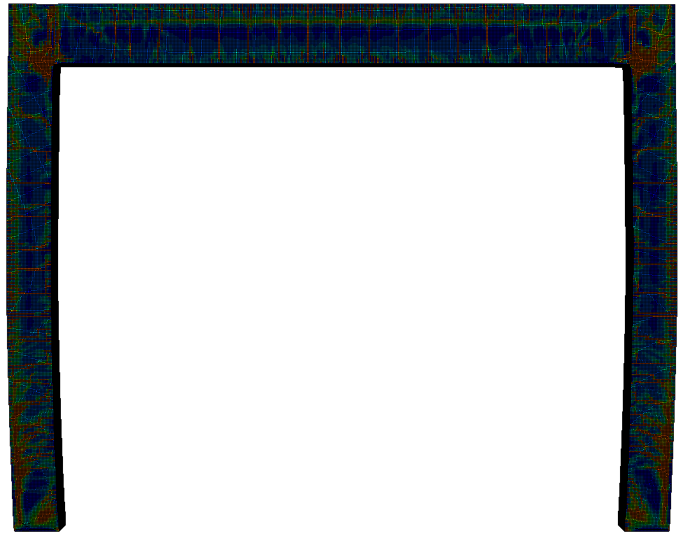
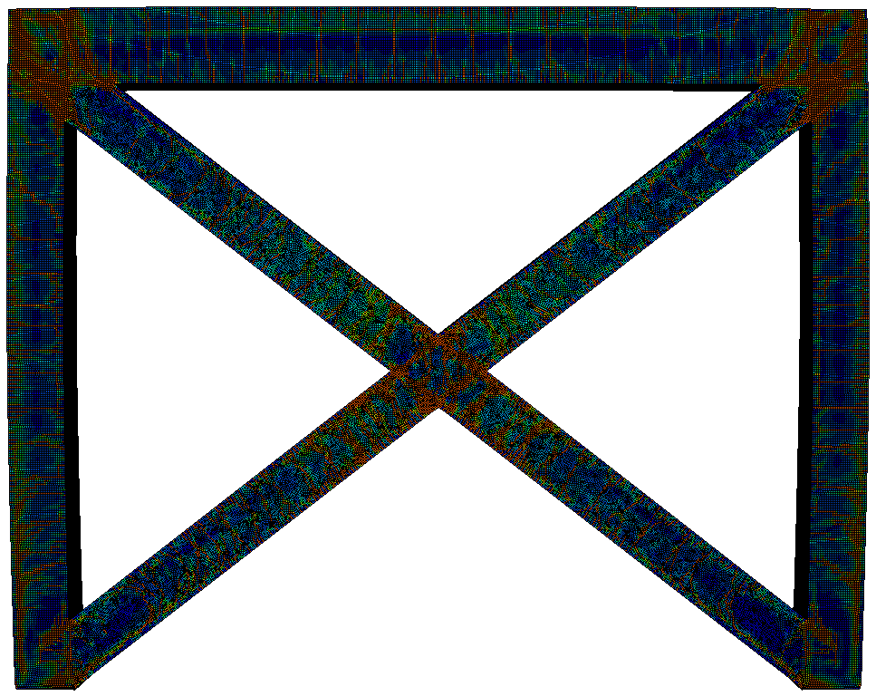
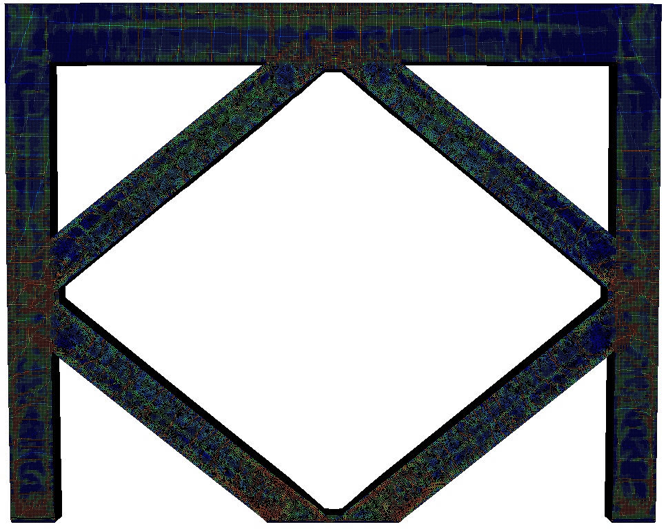
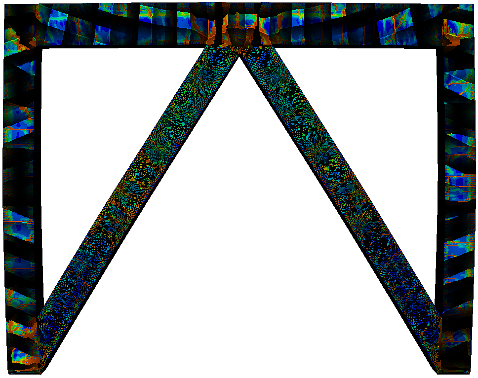
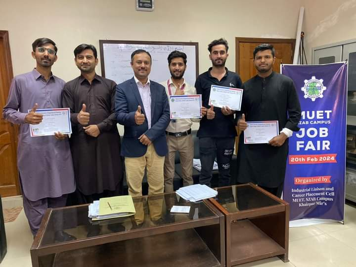
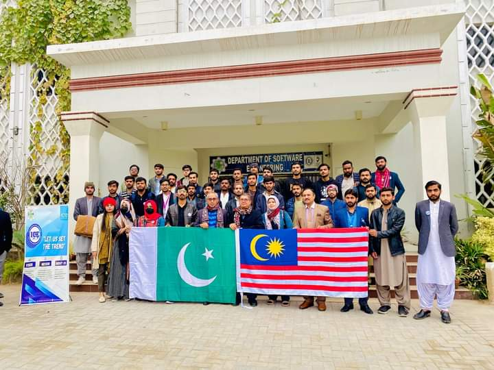

Civil Engineer · Pakistan
Structural Analysis · Finite Element Modelling · Sustainable Concrete
Civil Engineering graduate with published research spanning structural systems, nonlinear FE modelling, and sustainable concrete materials. Bridging computational analysis, laboratory testing, and real construction practice.
Nonlinear finite element analysis of structural systems under extreme and dynamic loading conditions
Experimental testing of supplementary cementitious materials and sustainable concrete mixes
Seismic performance and lateral load resistance of reinforced concrete frames and dual systems
I am a Civil Engineering graduate from Mehran University of Engineering and Technology (MUET) with research experience across structural analysis, finite element modelling, and sustainable concrete materials. I have published across structural systems and materials science, and I enjoy work that connects computational analysis, laboratory testing, and real construction practice.
My research sits at the boundary of structures and computation: using nonlinear FE models to understand how reinforced concrete systems respond to demanding loading scenarios, and using experimental testing to evaluate how material choices affect structural performance. Both tracks have led to published work and I am eager to push further in a graduate research environment.
Beyond the desk, I have supervised RCC works on active construction sites, developed BIM models in Revit, and conducted QA/QC checks on real infrastructure projects. That site-level experience shapes how I interpret computational results.
One of Pakistan's oldest and most respected engineering institutions. The programme covers structural engineering, geotechnical, hydraulics, transportation, and environmental disciplines, with strong emphasis on applied design and research.
Final Year Thesis
Comparative Assessment of Bracing Configurations in Reinforced Concrete Frames Subjected to Near-Field Blast Loading Using Nonlinear Finite Element Analysis
Supervisor: Engr. Dhanesh Kumar, Lecturer, MUET Shaheed Zulfiqar Ali Bhutto Campus, Khairpur Mirs
2 published journal papers and 4 conference papers, plus 1 manuscript under review in Scientific Reports — spanning structural systems, materials science, and concrete technology.
Comparative Assessment of Bracing Configurations in Reinforced Concrete Frames Subjected to Near-Field Blast Loading Using Nonlinear Finite Element Analysis
Nonlinear FEA using the Concrete Damage Plasticity model in ABAQUS. Validated against live-explosive column test data. Key finding: connection geometry governs blast performance, and blast resistance rankings diverge from established seismic rankings.
Evaluating the Structural Performance of Building Frame and Dual Frame System Incorporating Shear Walls
ETABS analysis of four G+7 building configurations under UBC-97 seismic loading. Core shear wall placement achieved 89% reduction in story displacement and 89% reduction in story drift with 29.7% steel savings.
Design and Simulation of Concrete Beams by Using Fly Ash as a Partial Replacement for Cement
Experimental and ETABS simulation study. Optimal 15% fly ash mix achieved highest flexural strength (2.557 MPa), minimum crack depth (101 mm), and improved lateral stiffness compared to conventional concrete.
Examining the Effect on Lightweight Concrete by Partially Replacing Fine Aggregate with Crumb Rubber and Cement with Sugarcane Bagasse Ash
Mechanical Properties of Eco-Friendly Bricks Utilizing Demolition Waste and Fly Ash
Complete Replacement of Coarse Aggregate with Burnt Brick Chunks in Concrete
Comparative Structural Analysis of Building Frame and Dual Frame System by Incorporating Shear Wall
Three areas of active research, each grounded in both computational and experimental approaches.
This research investigates how reinforced concrete frames respond to near-field blast events using nonlinear finite element analysis. The study compares multiple bracing configurations, tracking displacement, damage, and energy absorption across several frame locations to understand which design choices genuinely improve structural resilience under extreme dynamic loading.
The work used the Concrete Damage Plasticity model in ABAQUS with CONWEP blast loading, and was validated against published live-explosive RC column test data. The model accuracy confirmed it as a reliable tool for parametric comparison.
Related Publications




Red/orange regions indicate high tension damage. Braced frames show concentrated damage at connection zones, confirming that connection geometry is the governing design parameter.
This research strand evaluates the potential of industrial and agricultural by-products to partially or fully replace conventional cement and aggregates in concrete, reducing environmental impact while maintaining or improving structural performance. Testing covers workability, flexural strength, crack resistance, and structural stiffness.
Materials studied include fly ash, sugarcane bagasse ash, crumb rubber, sawdust, and burnt brick chunks. Both experimental testing and computational simulation (ETABS) were used to evaluate structural performance of beams and building elements with modified mix designs.
Related Publications
This research compares building frame systems and dual frame systems incorporating shear walls under seismic loading, using ETABS finite element software and UBC-97 design standards. The study examines how shear wall placement, section dimensions, and material properties affect story displacement, story drift, base shear, and material efficiency.
Four G+7 building models were analysed: a baseline building frame and three dual system configurations with varying shear wall placement (four-wall, two-wall, and core-wall). Results were compared in terms of structural performance and material quantity reduction.
Related Publications
A selection of design, analysis, and experimental projects spanning FEM, seismic analysis, sustainable materials, and structural planning.
ABAQUS · FEM
Modelled RC columns with different stirrup configurations in ABAQUS, comparing stress-strain behaviour to evaluate how transverse reinforcement detailing affects confinement and structural capacity.
ETABS · Seismic Analysis
Modelled a three-story residential building in ETABS and analysed its earthquake response through linear dynamic analysis, checking structural elements against seismic load combinations for code compliance.
Experimental · Materials
Developed a lightweight, sustainable mortar mix replacing part of the cement with sugarcane bagasse ash and using sawdust as an internal curing agent. Tested through split tensile strength testing.
Experimental · Concrete
Substituted 100% of conventional stone aggregate with crushed burnt brick chunks and evaluated the resulting concrete for compressive strength and suitability as a sustainable, low-cost alternative.
Manual Design · Structural
Designed an underground water tank entirely through hand calculations, sizing walls, base slab, and reinforcement to safely resist water pressure and soil loads.
Project Management · Planning
Built a complete construction project schedule from drawings and BOQ, including work breakdown, activity sequencing, critical path analysis, and S-curve progress monitoring.
Estimation · Quantity Surveying
Calculated material quantities and construction cost for a reinforced concrete commercial building from drawings, producing a detailed estimate for pre-construction budget planning.
2023 to present. Led chapter activities, coordinated ICE programming, and represented students at national engineering events and international webinars.
Coordinated international speakers, managed technical sessions, and handled logistics for the 1st International Conference on Sustainable Innovations and Infrastructure Development in Civil Engineering.
Runner-up in the Hult Prize social entrepreneurship competition. Developed a sustainable business solution addressing a global challenge, demonstrating initiative and teamwork under competitive conditions.
Contributed to planning and running research-oriented seminars on structural integrity, waste material utilisation, and engineering sustainability as part of the ICE chapter programme.
ABAQUS FEM Comprehensive Training · 2nd IMCEET-2024 · 15th ICEC-2025 · 2nd ICCCES-2025 · 1st ICSIID-2025 · Seminars on structural integrity and waste materials in concrete.


I am actively exploring graduate research positions in structural engineering, finite element modelling, seismic performance, and sustainable construction materials. I welcome conversations with faculty working in these or related areas.
Full academic and professional CV